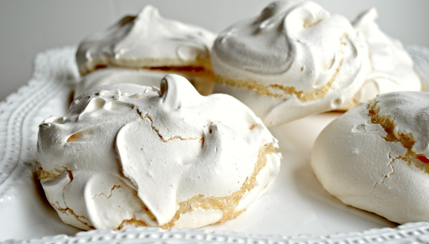

Meringues

Ingredients
Switch to Steps
-
4 Large Egg Whites (room temperature)
-
1/2 Tsp Lemon Juice
-
Pinch of Salt`
-
1 cup Granulated Sugar
-
1 Tsp Vanilla Extract
Steps
Switch to Ingredients
-
Preheat oven to 225F.
-
Line a cookie sheet with parchment paper.
-
Combine egg whites, lemon juics and salt in a large,
completely clean, completely grease-free bowl.
-
Using an electric mixer, stir on low speed until mixture becomes foamy.
-
Increase speed to high and gradually add sugar,
about 1 Tbsp at a time, stirring after each addition
until sugar is dissolved (about 15-20 seconds between additions).
-
Beat until mixture is thick, shiny, and has increased in volume.
-
Mixture should have stiff peaks and sugar should be completely dissolved.
and simmer until soft, about 10 minutes.
-
Stir in vanilla extract.
-
Place the mixture in cookie-sized portions on the baking sheet.
-
Return the apricots to the saucepan and add the lemon rind, granulated sugar,
corn starch, and 4 Tbsp of the soaking liquid.
-
Bake for 1 hour.
-
Turn off the oven once the baking time has passed,
and do not open then oven.
-
Leave the oven door closed and allow the cookies to cool
completely in the oven (1-2 hours) before removing.